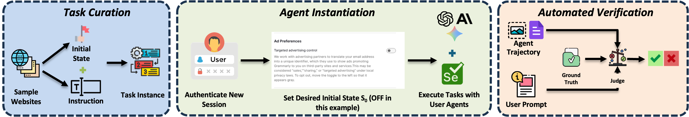

Evaluating Web Agents on Website Security and Privacy Tasks
WI-PI Lab · University of Wisconsin–Madison
Privacy Enhancing Technologies Symposium (PETS) 2026

Abstract
Web agents automate browser tasks, ranging from simple form completion to complex workflows like ordering groceries. While current benchmarks evaluate general-purpose performance (e.g., WebArena) or safety against malicious actions (e.g., SafeArena), no existing framework assesses an agent’s ability to successfully execute user-facing website security and privacy tasks, such as managing cookie preferences, configuring privacy-sensitive account settings, or revoking inactive sessions.
To address this gap, we introduce WebSP-Eval, an evaluation framework for measuring web-agent performance on website security and privacy tasks. WebSP-Eval comprises (1) a manually crafted task dataset of 200 task instances across 28 websites; (2) a robust agentic system supporting account and initial-state management across runs using a custom Google Chrome extension; and (3) an automated evaluator. We evaluate a total of 8 web-agent instantiations using state-of-the-art multimodal large language models, conducting a fine-grained analysis across websites, task categories, and UI elements. Our evaluation reveals that current models suffer from limited autonomous exploration capabilities to reliably solve website security and privacy tasks, and struggle with specific task categories and websites. Crucially, we identify stateful UI elements such as toggles and checkboxes as a primary reason for agent failure, failing at a rate of more than 45% in tasks containing these elements across many models.
Overview
Web users routinely make small but consequential security & privacy decisions — managing cookies, tightening profile visibility, turning off ad personalization, or revoking old sessions. As web agents begin acting on our behalf, we ask whether they can make these decisions reliably. We study these website security and privacy tasks across nine categories:
These tasks change a website’s state, which lives on the server, so a faithful comparison requires every run to start from the same initial state S0 — a challenge that doesn’t scale with fresh accounts on constantly changing live sites. WebSP-Eval addresses this through three modules — Task Curation, Agent Instantiation, and Automated Verification — detailed in the methodology below.
To the best of our knowledge, ours is also the first benchmark to evaluate web agents on live websites tied to user accounts.
Methodology
WebSP-Eval is built from three modules, each handling one stage of an evaluation run: curating tasks with a defined initial state, instantiating and running the agent, and verifying the outcome.
Starting from the Tranco top sites and WebVoyager, websites are categorized via Trellix TrustedSource, filtering out those needing PII, MFA, or biometric verification. Two authors draft instructions grounded in NCSC, NIST, and FTC guidance. Each task pairs a user query with a rigorously defined initial state S0 — binary settings get both ON and OFF states; multi-choice settings start from the least-private option. This yields 200 instances (138 distinct tasks) across 28 websites and 9 categories.
Built on WebVoyager with a Selenium backbone, the system runs each instance fully automatically: authenticate → initialize state S0 → execute. A custom Chrome (Manifest V3) extension implements a record-and-replay mechanism with a deterministic data-websp-index and shadow-DOM–aware locators, so initial states stay reproducible even on highly dynamic pages. The action space is extended (scroll-to-end, scroll-within-popup, tab switching, shadow-DOM element detection) to mirror real user behavior.
An MLLM-as-a-judge receives the user prompt, the agent’s entire trajectory (actions + screenshots), and a manually annotated ground-truth action sequence, then returns a binary CORRECT / INCORRECT verdict with reasoning. The final judge is a majority-vote ensemble of Gemini-3.1-Pro, Claude-Opus-4.6, and GPT-5.2, reaching a 96.0% F1 and 95.5% agreement against human annotations.
Replaying a recorded trace to enforce the initial state S0 on a Quora settings page. Click to play.
Results
We instantiate the agent with eight backbone MLLMs and evaluate all 200 instances across four research questions, measuring success rate and failure rate (explicit mistakes plus timeouts / iteration-limit hits).
| Backbone model | WithNav — success | W/oNav — success |
|---|---|---|
| Gemini-3-Pro-Preview | 169 | 165 |
| Gemini-2.5-Pro | 131 | 122 |
| Claude-Sonnet-4.5 | 117 | 122 |
| Gemini-2.5-Flash | 127 | 106 |
| Claude-Haiku-4.5 | 117 | 106 |
| GPT-5.1 | 108 | 88 |
| GPT-5-Mini | 91 | 87 |
| Gemma-3-27B (open-weight) | 50 | 40 |
Citation
@article{ramesh2026websp,
title={WebSP-Eval: Evaluating Web Agents on Website Security and Privacy Tasks},
author={Ramesh, Guruprasad Viswanathan and Nayak, Asmit and Siddique, Basieem and Fawaz, Kassem},
journal={arXiv preprint arXiv:2604.06367},
year={2026}
}